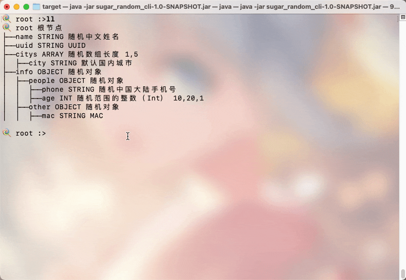
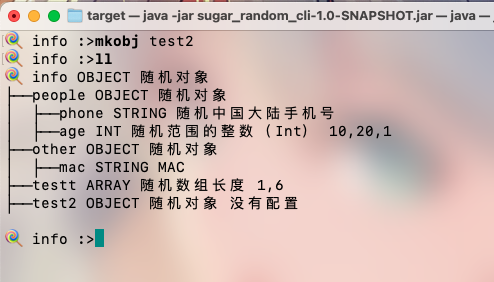
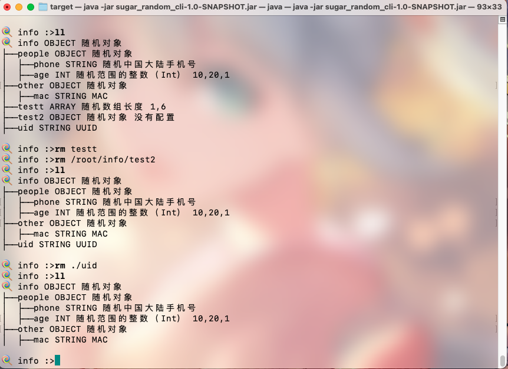
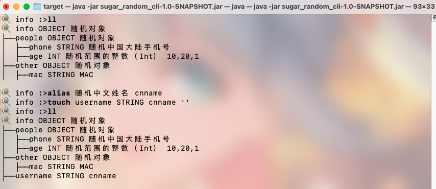

CLI 命令
部分截图与当前版本存在差异，不影响教程
开始之前
如果你还没有安装，请前往安装
基本介绍
启动

核心命令
概述
-
cd: 进入到某个节点
-
ll: 展示结构
- pwd: 当前节点路径
-
alias: 别名，仅针对随机类型名，会覆盖，优先级大于随机类型名
-
mkarr: 添加一个数组，input 参考 [show-rtype 随机数组长度]
-
mkobj: 添加一个object
-
rm: 删除
-
touch: 添加字段
详细说明
cd、ll、pwd
这个大家应该很熟悉了，支持绝对路径和相对路径

mkarr
建立一个数组 参数是数组名和数组长度配置。
🍭 root :>help mkarr
NAME
mkarr - 添加一个数组，input 参考 [show-rtype 随机数组长度]
SYNOPSYS
mkarr [--name] string [--input] string
OPTIONS
--name string
[Mandatory]
--input string
[Mandatory]
例如下面演示了在info下建立一个数组

mkobj
建立一个对象，参数只有一个对象名字。

touch

rm
支持绝对路径和相对路径

alias
考虑到随机类型过于长，所以支持别名。（目前还没有想好怎么优化

其它
spring shell 框架自带的一些命令
- clear: Clear the shell screen.
- exit, quit: Exit the shell.
- help: Display help about available commands.
- script: Read and execute commands from a file.
- stacktrace: Display the full stacktrace of the last error.
config
对应WEB的配置功能，分别是删除，读取，存储。参数都是name
- read: 配置读取
- save: 配置存储
输出
- out-file: 生成文件到本地
- remove-all: 移除所有配置
- code:生成代码
show
一些预览展示
- show-all-r: 展示所有随机类型
- show-json: 预览随机结果
- show-rtype: 展示某个随机结构的提示
- show-tree: 预览随机结构